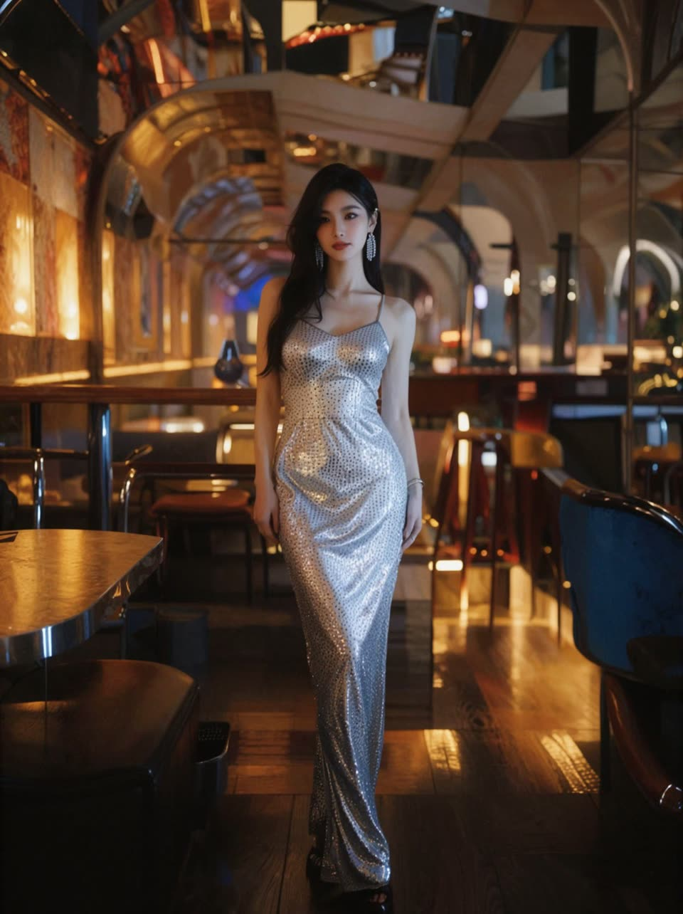

GPT Image 2.6: silver sequin evening dress in a mirrored cocktail lounge, amber and cool-blue practicals, 85mm f/1.4

A full-length nightlife editorial: an adult woman in a silver sequin evening gown in a mirrored, arched cocktail lounge, lit by amber and cool-blue practical lights. The prompt uses a compact six-line labelled format (SUBJECT / LIGHT / CAMERA / LOCK / NEGATIVE / TONE), and the creator's tip is the useful part: with sequins and metals, the NEGATIVE line ("no blown-out speculars on the sequins") matters more than the positive description, because sequins usually turn to mush. The LOCK line ("keep the dress silhouette") is written for re-runs and edits. Good for eveningwear, jewellery and party-season campaigns.
Prompt
SUBJECT — glamorous adult woman in a silver sequin evening dress, standing in a mirrored cocktail lounge LIGHT — amber and cool blue practical lights, sequins catching specular highlights CAMERA — 85mm, f/1.4, full outfit visible, eye level LOCK — same face, same dress, same mirrored room — keep the dress silhouette NEGATIVE — no extra limbs, no text, no watermark, no blown-out speculars on the sequins TONE — luxury nightlife editorial, cinematic bokeh, rich contrast
Our Seedance 2.5 adaptation
[ADAPTED for Seedance 2.5 by Grok Bot; not the creator's prompt. Follows the official BytePlus Seedance 2.5 prompt guide and its official sd25-pe prompt-optimizer skill: parameters only on the API line (not in the prompt body), subject + action + scene, then visuals, camera (move, subject, start, direction, arrival) and sound; only the source's own exclusions are kept.] API: duration 6, ratio adaptive, resolution 1080p, generate_audio true; first_frame = the GPT Image 2.6 still. 【Subject】The woman exactly as in the first frame, in the silver sequin evening gown, in the mirrored cocktail lounge with amber and cool-blue practical lights. The dress silhouette never changes. 【Action】She takes three slow steps toward the camera and turns her shoulders slightly; the sequins catch moving specular glints as she walks; her reflection follows correctly in the mirrors. 【Camera】Full-length framing at eye level, an 85mm look with shallow depth of field; a slow dolly back that keeps the whole outfit in frame. 【Visuals】Luxury nightlife editorial, cinematic bokeh, rich contrast. Sequin highlights stay crisp and are never blown out. No extra limbs, text or watermark. 【Sound】Low lounge music in the distance, glasses clinking, heels on a polished floor.
Tags: GPT Image 2.6, sequin gown, eveningwear, specular control, labelled prompt format, LOCK line, NEGATIVE line, 85mm f/1.4, mirrored lounge, amber and blue practicals